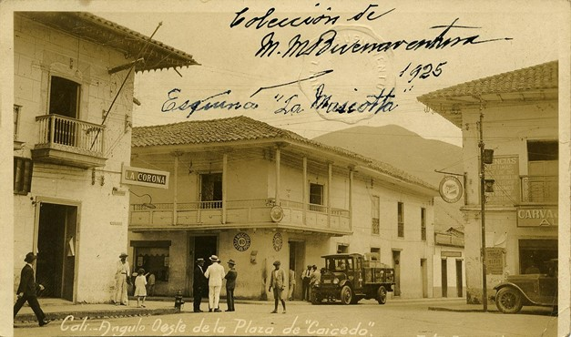

Reseña Historica
NUESTRA RAÍCES Y EVOLUCIÓN A TRAVÉS DEL TIEMPO
Según algunos historiadores el Puerto del Pacífico llamado hoy Buenaventura, fue descubierto por el Licenciado Pascual de Andagoya a mediados del año 1540.
En su segundo viaje por la costa Occidental recaló en la ensenada de Málaga y en una de las Islas de ella, que desde entonces recibió el nombre de "Isla de la Muerte", se extinguió la vida de Don Luís de Andagoya hermano del licenciado.
El dolor de la pérdida de su hermano, hizo ingrata la permanencia en la ensenada a don Pascual y la abandonó para buscar otra isla cercana de mayor tamaño, habitada por una tribu de indios llamados " Buscajaes." Después de cuatro días de penosa navegación por las bocanas de Solán y Santa Ana, arribó el 14 de julio de 1540 a la bahía de la Isla de Cascajal que llamó de la Buenaventura, por lo tranquilo de las aguas y lo abrigado del recodo.
La Isla de Cascajal, de tres kilómetros de longitud muestra una superficie irregular con depresiones en las dos extremidades y coronada por un altozano en el centro que hoy se denomina " La loma".
Los buscajaes recibieron a los conquistadores con manifestaciones de complacencia y hospitalidad y los obsequiaron con pescados, coco, miel de abejas y plátanos. Allí tuvo Andagoya noticia de que en los nacimientos de los ríos Anchicayá y Raposo existían minas de oro muy ricas y halagado por tan fausta nueva decidió marchar a ellas. Antes de partir recomendó a don Juan de Ladrilleros que fundara una población en el área del Cascajal.
La población fue incendiada por los indios hacia fines del siglo XVI desde entonces la ciudad secular ha discurrido una vida de dificultades e incertidumbres que impidieron su afirmación definitiva por largo tiempo. Unas veces la ataca el fuego destructor, otras la incomprensión que encuentra argumentos en sus condiciones naturales, para retenerla en la marcha. Su continua lucha, cuando no contra la acción adversa, contra el olvido, ha tenido que vivir a la defensiva en toda hora. Y si bien es verdad que el progreso venció ya los mayores obstáculos que se le atravesaron en la senda, no es menos cierto que no ha dejado las realizaciones que correspondían a la antigüedad de la ciudad y a sus magníficas condiciones geográficas y portuarias.
Por su parte, el notable historiador colombiano, don Rufino Gutiérrez trae las siguientes informaciones:
El 15 de febrero de 1540 el licenciado don Pascual de Andagoya salió de Panamá en tres embarcaciones a hacer exploraciones en el mar pacífico y entonces entró el primero a la Bahía que más tarde se llamó Buenaventura. Su teniente Juan de Ladrilleros que venía en avanzada de exploración descubrió una ensenada y fundó en ella una población que bautizó con el nombre de Puerto de la Cruz Oviedo, al hablar de esta dice que es " una de las más hermosas ensenadas que hombres han visto y entran en ella muchos ríos grandes y pequeños y agrega que allí se dio principio a la fundación de una población con el nombre de Buenaventura." y se nombró a Ladrilleros teniente de la fundación.
Don Juan López de Velasco dice que el capitán Gutiérrez de la Peña, teniente de Andagoya, fundó en esta bahía una población en 1540 y agrega que en 1546 había solo tres o cuatro vecinos oriundos de Cali, encargados de despachar las mercancías y que era tierra "enferma, áspera y muy lluviosa".
Fray Jerónimo de Escobar, procurador y visitador de la diócesis de Popayán, quien la recorrió toda, dice en la relación que escribió en 1582 lo siguiente: que parece indicar que el Puerto primitivo no fue en la Isla de Cascajal sino en el río Dagua, un poco arriba, pero debe tenerse en cuenta que este no es navegable por embarcaciones que logran la travesía a Panamá sino en la desembocadura a la Bahía. "este Puerto es un río a donde llegan los barcos desde la ciudad de Panamá, los cuales, dichos barcos navegan a ciento cincuenta leguas por el mar, que es llamado del sur, hasta dar en este río, correrán estos dichos barcos por este río, hasta dar en el Puerto, ocho leguas". Agrega que se hacía mucho trato por el Puerto.
Seguir Leyendo... 